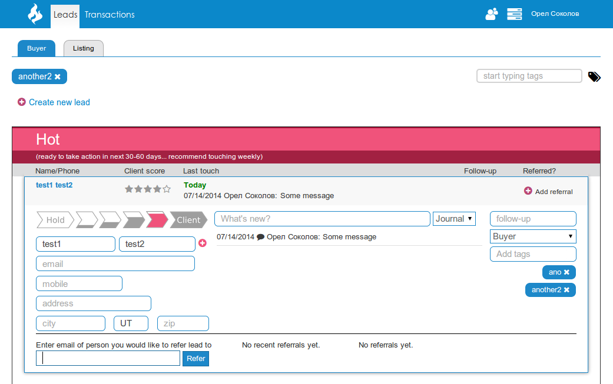

self.to_s
My name is Oleg Orlov. I am a talented senior Ruby on Rails developer with over 5 years of experience involving agile software development practices, analysis, design, implementation and testing Ruby applications. I also love Go and Python, and have frontend skills too.


What I can
High Load Apps
I have experience of building High Load apps with great teams.
I helped to build high load apps, such as People Sap, Van Lanshot
Micro services
I am ready to build complex apps with microservices.
For last two years I worked with micro services: Orpiva, People SAP, internal EPAM Projects, Van Lanshot
Optimizations
I love to make apps more efficient.
I worked with many apps which required a lot of search requests and calculations, for example: LPS, Karmasoft, Van Lanshot
Clean & Safe Code
I always try to keep my code clean and good. I use linters and security checkers if possible.
My favorite helpers for Ruby are Rubocop, RBP, Brakeman
Remote Work
30% of my work experience were remote projects.
I worked with client without company with: Nitroagent, Karmasoft, Chorus
Direct communication
I like to talk directly with client from amy country.
In my work I always contact with client via voice and messages. It does not matter freelance or company.
Business Processes
I prefer to use already defined methodologies and do not reinvent wheels.
I try to avoid jobs where "task should be done yesterday" and etc. Good planning is the half of success. I like success, not fails.
Awesome Ideas
I always try to suggest the best solutions and make projects better if possible
Almost all projects I worked on smelt at the beginning, there were some code and architecture issues. I always tried to find solution for each case and resolve problem.
What i created
May 2018 - Now
Senior RoR Developer at KarmasoftKarmasoft Joga Studio
- Rails 3
- Rails 5
- PJAX
- SCSS
- Mysql
- Redis
March 2017 - July 2018
Mid developer at EPAMSAP People
It is internal SAP social network with questions and answers like Stackoverflow
Used technologies:- Slim
- CoffeeScript
- SASS
- Redis
- Mongodb
- Rails 4
- Rails 5
January 2016 - February 2017
Mid RoR developer at SumatoSoftLPS - Plumbing App
- Bower
- Nodejs
- Puma
- Vagrant
- WickedPDF
XXX Website
SellBig - Online Store
July 2015 - January 2016
Lead RoR developer at NitroAgent.comnitroagent.com
- Rails 4
- Bower
- RVM
- AngularJS
- Bundler
- Slim
- CoffeeScript
- SASS
- Redis
- Puma
- Vagrant
August 2014 - July 2015
Full stack Ruby developer at Clothes Network Ltd.Scrooge, Web scraper
- Bower
- RVM
- DataMapper ORM
- Redis Key-Value Database
- Vagrant
- Docker
- Chef
Orpiva Blog
Blog for Opiva project
Used technologies:- RVM
- Bundler
- Jekyll
Orpiva, Fashion Search Engine
Need it but don’t know where to buy it? Using just a url or a photo snapped on your phone, Orpiva sifts through products from over 15,000 brands and retailers to find a perfect match or similar current stock.
Used technologies:- Sinatra
- Bower
- RVM
- Bundler
- Datamapper ORM
- Slim
- CoffeeScript
- SASS
- RequireJS AMD
- Redis
- Unicorn
- Vagrant
- Docker
- Chef
July 2014 - Jyly 2014
Frontend & Backend developer chorusaccess.orgchorusaccess.org
CHORUS leverages existing infrastructure to enable sustainable, cost-effective, and transparent public access to content reporting on funded research. By integrating services and open APIs, CHORUS optimizes funder identification, content discovery and long-term accessibility, compliance monitoring, and dashboard reporting.
Used technologies:- JQuery
- Sinatra
October 2013 - June 2014
Junior RoR developer at NitroAgent.comnitroagent.com
Simple real estate web application for closed group of people.
Used technologies:- Rails 3
- AngularJS
- Bundler
- CoffeeScript
- SASS
- Unicorn
- Nginx
July 2013 - September 2013
Junior RoR developer at realt.bizrealt.biz
House search site for Belarus users.
What I learned
High Load Apps
I have experience of building High Load apps with great teams.
I helped to build high load apps, such as People Sap, Van Lanshot